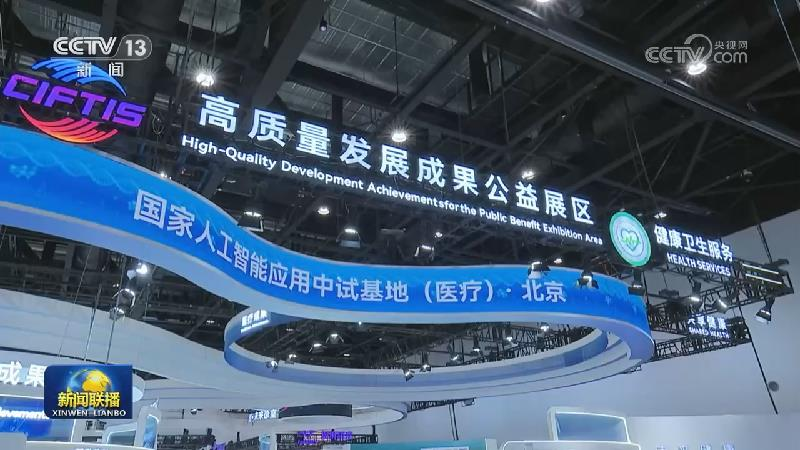
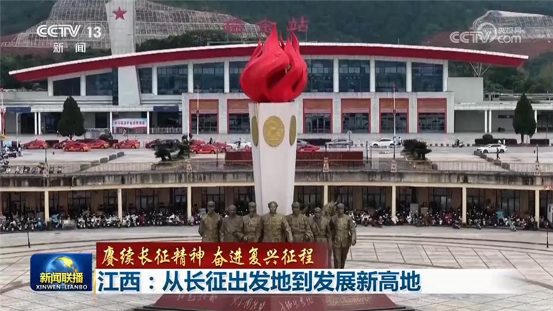
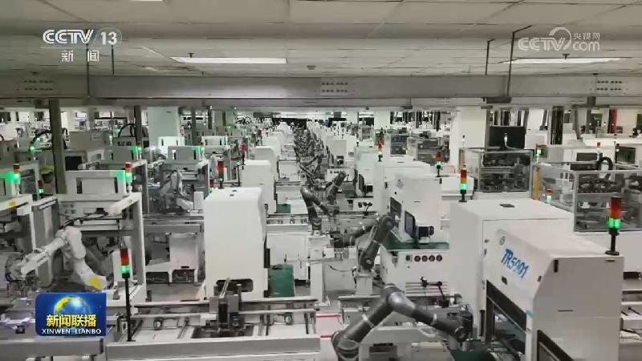
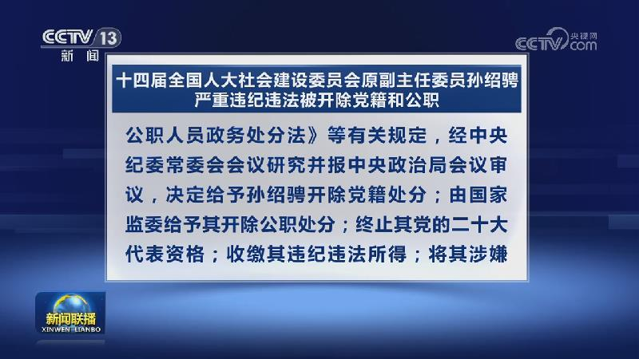
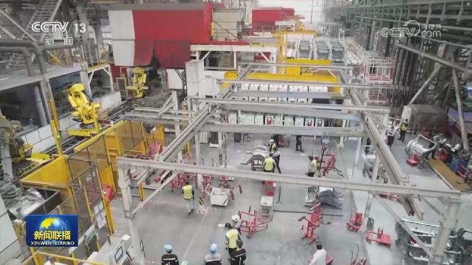
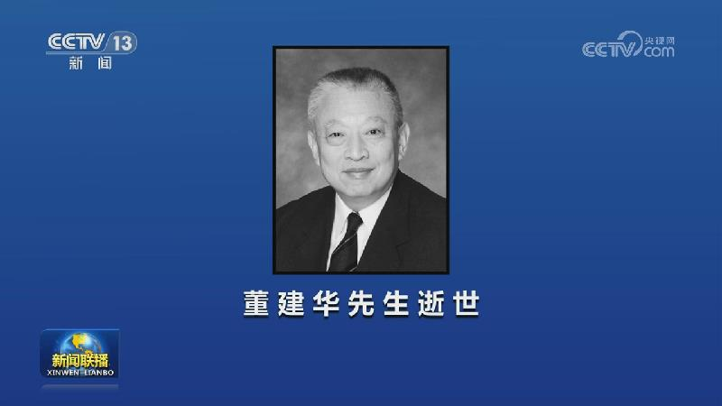
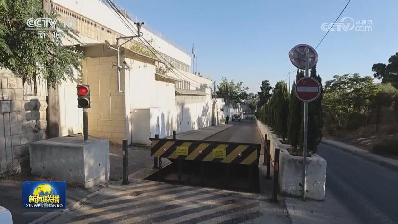
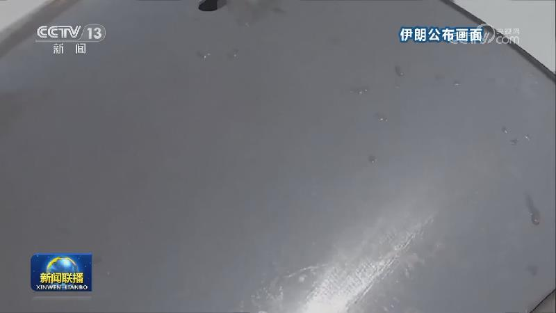
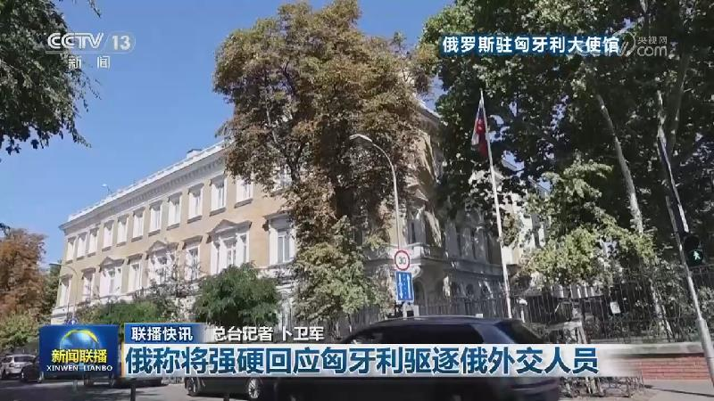

01
在第四十二个教师节到来之际 习近平向全国广大教师和教育工作者致以节日祝贺和诚挚问候
在第四十二个教师节到来之际，中共中央总书记、国家主席、中央军委主席习近平代表党中央，向全国广大教师和教育工作者致以节日祝贺和诚挚问候。

在第四十二个教师节到来之际，中共中央总书记、国家主席、中央军委主席习近平代表党中央，向全国广大教师和教育工作者致以节日祝贺和诚挚问候。
本台今天（9月9日）播发央视快评《在全社会营造尊师重教良好氛围 汇聚起教育强国建设的强大合力》。
9月9日，中共中央总书记、国家主席习近平就朝鲜国庆78周年向朝鲜劳动党总书记、国务委员会委员长金正恩致贺电。
9月8日晚，国家主席习近平应约同英国首相伯纳姆通电话。习近平祝贺伯纳姆就任英国首相，指出中英是全面战略伙伴，虽然两国社会制度和国情不同，但共同利益大于分歧，双方应当互尊互信、超越分歧、求同存异，做大互利合作的蛋糕。两国政府都致力于发展经济、改善民生，可以优势互补、相互助力。中国“十五五”时期将进一步扩大教育、医疗、金融对外开放，这些都是两国合作有潜力的领域。……

2026年全球服务贸易峰会9日在北京举行，中共中央政治局常委、国务院副总理丁薛祥出席并作主旨讲话。

今年是长征胜利90周年。在那场伟大的远征中，中国工农红军纵横十余省，不畏艰险、浴血奋战，谱写了震撼世界、彪炳史册的壮丽史诗，铸就了中华民族伟大复兴历史进程中的巍峨丰碑。伟大的长征精神，跨越时空、历久弥新。
国务院新闻办公室今天（9月9日）举行“开局起步‘十五五’”系列主题新闻发布会。中央统战部、中央社会工作部、全国人大常委会、全国政协、国家民委相关负责人介绍“十五五”时期发展社会主义民主有关情况。

国家统计局今天（9月9日）发布的数据显示，8月份，居民消费价格指数（CPI）同比上涨0.8%，继续保持温和回升。扣除食品和能源价格的核心CPI同比涨幅回升至1.0%。
今年以来，我国不断加大民生领域财政投入力度，密集落地一系列惠民举措，为人民群众带来实实在在的便利和实惠。

经中共中央批准，中央纪委国家监委对第二十届中央委员、十四届全国人大社会建设委员会原副主任委员孙绍骋严重违纪违法问题进行了立案审查调查。

今天（9月9日），人力资源社会保障部等部门发布第八批新职业，包括11个新职业和23个新工种。

“一国两制”杰出贡献者，著名的爱国人士，杰出的社会活动家，中国共产党的亲密朋友，中国人民政治协商会议第十届、十一届、十二届、十三届全国委员会副主席，香港特别行政区第一任、第二任行政长官董建华先生，因病于2026年9月8日21时57分在香港逝世，享年89岁。
中秋国庆假期铁路运输方案公布

英国首相伯纳姆、法国总统马克龙、加拿大总理卡尼8日发表联合声明，谴责以色列在约旦河西岸地区扩张，呼吁落实“两国方案”。声明说，根据国际法，约旦河西岸的以色列定居点属于非法机构。三国决定禁止从定居点进口商品，并对定居点及相关人员实施针对性制裁。

伊朗伊斯兰革命卫队今天（9月9日）发表声明说，为回应美军在波斯湾袭击伊朗油轮的侵略行为，革命卫队海军打击并重创该区域内的2艘美国舰船和8艘油轮。革命卫队还对位于约旦的美军基地实施导弹打击，击中美军战机的机库。

俄美元首通话重点讨论解决乌克兰问题